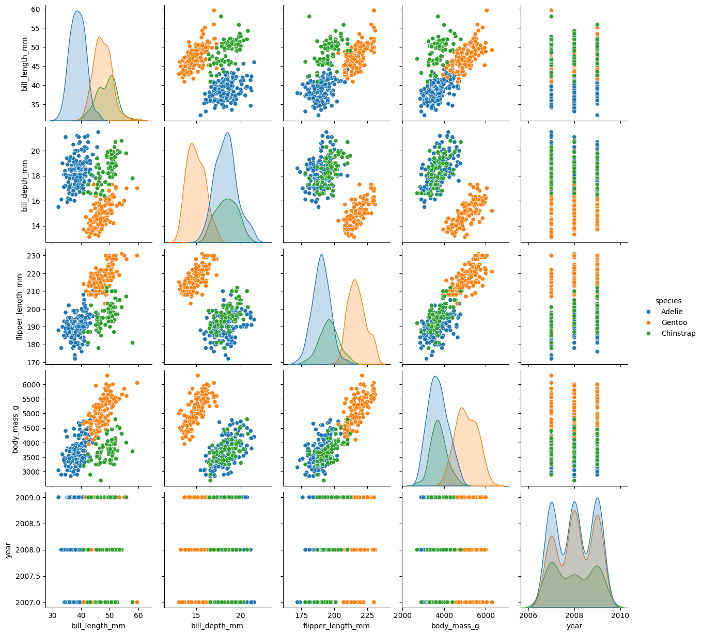
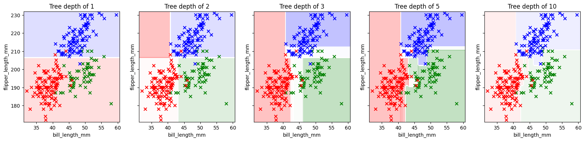
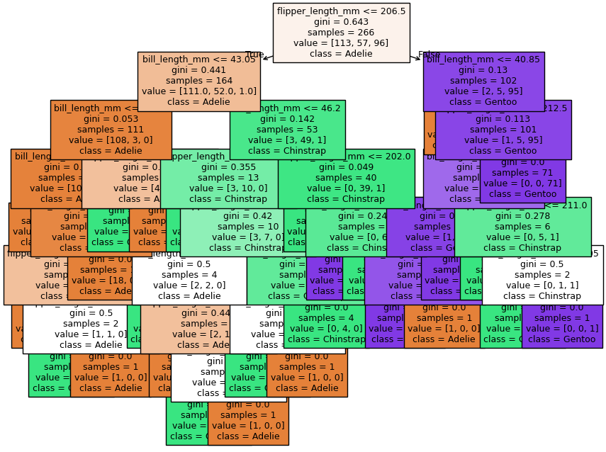
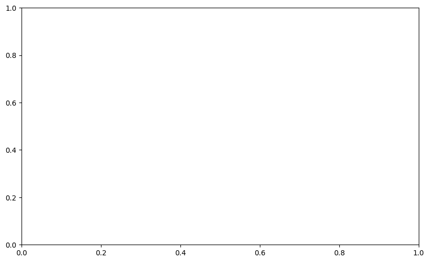

10. Tree Methods (continued)#
but first…
10.1. Hyper-parameter Search and Validation#
Tree methods have many hyper-parameters compared to the algorithms we’ve encountered thus far. Here are some from the documentation:
max_depth - how many layers may the tree have
min_samples_split - how many samples must be in a node to allow a split
min_samples_leaf - how many samples must be in a leaf
max_features - the number of features to consider in a split
max_leaf_nodes - stop growing the tree at a specified number of leaves
and others
10.1.1. Grid Search#
How do we explore this space? Suppose I want to try trees with these options:
max_depth = [4, 6, 8, 10, 12]
min_samples_split = [10, 20, 40]
How many models will I be testing?
GridSearch does just this in an automated way, testing every combination from the parameters you’d like to test.
max_depth |
min_samples_split |
Cartesian Product |
|---|---|---|
4 |
10 |
(4, 10) |
4 |
20 |
(4, 20) |
4 |
40 |
(4, 40) |
6 |
10 |
(6, 10) |
6 |
20 |
(6, 20) |
6 |
40 |
(6, 40) |
8 |
10 |
(8, 10) |
8 |
20 |
(8, 20) |
8 |
40 |
(8, 40) |
10 |
10 |
(10, 10) |
10 |
20 |
(10, 20) |
10 |
40 |
(10, 40) |
12 |
10 |
(12, 10) |
12 |
20 |
(12, 20) |
12 |
40 |
(12, 40) |
10.1.2. Cross-Validation#
Validation is used to select from a set of candidate models (e.g. different learning algorithms, variations on the same algorithm with different hyperparameters). In the simplest form of validation, we split off a portion of the training data and compare models based on their performance on this validation set. But more commonly, we use K-fold Cross-Validation:
here

Split the training data into K “folds”
Set the first fold aside as a validation set and train on the remaining data.
Validate using that first fold as a validation set.
Repeat the process (K times in total), each time using a different fold as the validation set.
Average the performance across all the training-validation iterations.
10.1.3. Grid Search + Cross-Validation#
Grid Search and Cross-Validation are used in tandem so commonly that sklearn packages them together in some very convenient functions.
(some we’ve seen before)
10.2. Example: Palmer Penguins#
Let’s try to predict the species of penguins based on measured attributes.
import pandas as pd
import numpy as np
import matplotlib.pyplot as plt
from matplotlib.colors import ListedColormap
import seaborn as sns
from sklearn.tree import DecisionTreeClassifier, plot_tree
from sklearn.preprocessing import OneHotEncoder, OrdinalEncoder, LabelEncoder, StandardScaler
from sklearn.compose import ColumnTransformer
from sklearn.model_selection import GridSearchCV, train_test_split
from sklearn.metrics import confusion_matrix, ConfusionMatrixDisplay
from sklearn.inspection import DecisionBoundaryDisplay
palmer = pd.read_csv('https://gist.githubusercontent.com/slopp/ce3b90b9168f2f921784de84fa445651/raw/4ecf3041f0ed4913e7c230758733948bc561f434/penguins.csv', index_col = 'rowid')
display(palmer.sample(10))
display(palmer.info())
display(palmer['species'].unique())
sns.pairplot(palmer, hue = 'species')
plt.show()
| species | island | bill_length_mm | bill_depth_mm | flipper_length_mm | body_mass_g | sex | year | |
|---|---|---|---|---|---|---|---|---|
| rowid | ||||||||
| 334 | Chinstrap | Dream | 49.3 | 19.9 | 203.0 | 4050.0 | male | 2009 |
| 319 | Chinstrap | Dream | 50.9 | 19.1 | 196.0 | 3550.0 | male | 2008 |
| 95 | Adelie | Dream | 36.2 | 17.3 | 187.0 | 3300.0 | female | 2008 |
| 138 | Adelie | Dream | 40.2 | 20.1 | 200.0 | 3975.0 | male | 2009 |
| 47 | Adelie | Dream | 41.1 | 19.0 | 182.0 | 3425.0 | male | 2007 |
| 294 | Chinstrap | Dream | 58.0 | 17.8 | 181.0 | 3700.0 | female | 2007 |
| 199 | Gentoo | Biscoe | 45.5 | 13.9 | 210.0 | 4200.0 | female | 2008 |
| 287 | Chinstrap | Dream | 46.6 | 17.8 | 193.0 | 3800.0 | female | 2007 |
| 330 | Chinstrap | Dream | 50.7 | 19.7 | 203.0 | 4050.0 | male | 2009 |
| 249 | Gentoo | Biscoe | 49.4 | 15.8 | 216.0 | 4925.0 | male | 2009 |
<class 'pandas.core.frame.DataFrame'>
Index: 344 entries, 1 to 344
Data columns (total 8 columns):
# Column Non-Null Count Dtype
--- ------ -------------- -----
0 species 344 non-null object
1 island 344 non-null object
2 bill_length_mm 342 non-null float64
3 bill_depth_mm 342 non-null float64
4 flipper_length_mm 342 non-null float64
5 body_mass_g 342 non-null float64
6 sex 333 non-null object
7 year 344 non-null int64
dtypes: float64(4), int64(1), object(3)
memory usage: 24.2+ KB
None
array(['Adelie', 'Gentoo', 'Chinstrap'], dtype=object)

# Prepare the data
palmer.dropna(axis = 0, inplace=True)
palmer.reset_index(drop = True, inplace=True)
First, a quick visualization of how a decision tree slices up the feature space. For this visualization, we’ll select just two features.
Which two features would work well for predicting the species of the penguin?
features = ['bill_length_mm', 'flipper_length_mm']
target = ['species']
X = palmer[features]
y = palmer[target]
y_label = LabelEncoder().fit_transform(palmer[target]).ravel()
X_train, X_test, y_train, y_test = train_test_split(X, y_label, test_size=0.2)
fig, axs = plt.subplots(1,5, figsize = (20,4), sharey = True)
for ax, depth in zip(axs, [1, 2, 3, 5, 10]):
tree_clf = DecisionTreeClassifier(max_depth=depth)
tree_clf.fit(X_train, y_train)
y_pred = tree_clf.predict(X_test)
cmap = ListedColormap(['red', 'green', 'blue']) # Training Data
DecisionBoundaryDisplay.from_estimator(
estimator = tree_clf,
X = X,
multiclass_colors=['r', 'g', 'b'],
alpha = 0.25,
ax = ax
)
## Training
ax.scatter(X_train.iloc[:,0], X_train.iloc[:,1],
c = y_train, cmap = cmap, marker = 'x')
# Testing Data
# ax.scatter(X_test.iloc[:,0], X_test.iloc[:,1],
# c = y_test, cmap = cmap, marker = '.')
ax.set_title(f'Tree depth of {depth}')

feature_names = tree_clf.feature_names_in_
label_names = ['Adelie', 'Chinstrap', 'Gentoo']
fig, ax = plt.subplots(1,1, figsize = (10, 8))
plot_tree(tree_clf,
filled = True, fontsize = 9,
feature_names = feature_names, class_names = label_names)
plt.show()

Now let’s find the best-fit tree for these data using GridsearchCV. Our modeling pipeline:
Select features and targets
Encode categorical data (tree methods don’t require scaling)
Specify candidate values for hyper-parameters
Fit GridSearchCV
Evaluate best-fit model
palmer.head()
| species | island | bill_length_mm | bill_depth_mm | flipper_length_mm | body_mass_g | sex | year | |
|---|---|---|---|---|---|---|---|---|
| 0 | Adelie | Torgersen | 39.1 | 18.7 | 181.0 | 3750.0 | male | 2007 |
| 1 | Adelie | Torgersen | 39.5 | 17.4 | 186.0 | 3800.0 | female | 2007 |
| 2 | Adelie | Torgersen | 40.3 | 18.0 | 195.0 | 3250.0 | female | 2007 |
| 3 | Adelie | Torgersen | 36.7 | 19.3 | 193.0 | 3450.0 | female | 2007 |
| 4 | Adelie | Torgersen | 39.3 | 20.6 | 190.0 | 3650.0 | male | 2007 |
GridSearchCV requires three parameters:
an not-yet-fit instance of the desired model type (e.g. DecisionTreeClassifier, LogisticRegressionClassifier, etc)
a dictionary in which the keys are the hyper-parameter names and the corresponding values are a list of values you’d like to try for that hyper-parameter
the number of folds in your cross validation
The grid object stores the info for all fit models, and we may choose to compare them at some point, but for now, we just want to get the best of the models it tested.
We can extract the best model using .best_estimator_.
Let’s evaluate and visualize our model.
tree2 = grid.best_estimator_
y_pred = tree2.predict(X_test)
cfm = confusion_matrix(y_test, y_pred)
ConfusionMatrixDisplay(cfm, display_labels = label_names).plot()
plt.show()
---------------------------------------------------------------------------
NameError Traceback (most recent call last)
Cell In[8], line 1
----> 1 tree2 = grid.best_estimator_
2 y_pred = tree2.predict(X_test)
4 cfm = confusion_matrix(y_test, y_pred)
NameError: name 'grid' is not defined
Interpret the confusion matrix above (for the test data). Which species get mistaken for other species?
Next, let’s investigate which features were most important. Generally, we think the features used higher up on the tree are the most informative features, since decision trees are trained by a greedy algorithm. But more specifically, the most informative features are the ones that are responsible for the greatest decrease in impurity.
We can get the importance of each feature using .feature_importances_.
Below we plot the decision tree and then print a list of features ordered by importance.
Compare that list to the structure of the tree. Does it make sense? What does it mean if a feature has 0 importance?
fig, ax = plt.subplots(1,1, figsize = (10, 6))
plot_tree(tree2,
filled = True, fontsize = 9,
feature_names = feature_names, class_names = label_names,
)
plt.show()
---------------------------------------------------------------------------
NameError Traceback (most recent call last)
Cell In[9], line 3
1 fig, ax = plt.subplots(1,1, figsize = (10, 6))
----> 3 plot_tree(tree2,
4 filled = True, fontsize = 9,
5 feature_names = feature_names, class_names = label_names,
6 )
8 plt.show()
NameError: name 'tree2' is not defined

# Get feature importances and sort in decending order
idx = np.argsort(tree2.feature_importances_)[::-1]
# print importances
importances = tree2.feature_importances_[idx]
features = feature_names[idx]
for feature, imp in zip(features, importances):
print(f'{feature:_<30}{imp:.3f}')
---------------------------------------------------------------------------
NameError Traceback (most recent call last)
Cell In[10], line 2
1 # Get feature importances and sort in decending order
----> 2 idx = np.argsort(tree2.feature_importances_)[::-1]
4 # print importances
5 importances = tree2.feature_importances_[idx]
NameError: name 'tree2' is not defined
10.3. Decision/Classification Tree Recap#
A decision tree classifies samples using a heirarchy of cascading conditional statements (yes-no questions about the sample).
In fitting a decision tree, at each node, a conditional statement is chosen so as to maximize the purity of the resultant split sub-samples.
Fitting a decision tree is deterministic. That is, given the same training data and hyper-parameters, you will arrive at the same tree.
There are challenges that come with real data that often cause problems for a decision tree:
High-dimensional data (many features)
Noisy data
Imbalanced class representation
We can improve on an individual decision tree by fitting numerous decision trees—an ensemble—and averaging/polling their results. There are two main categories of ensemble methods for decision trees, Random Forests and Boosted Trees, each with their own benefits and weaknesses.